Doris
Doris是北航Toastmasters早期的资深会员之一，club里大家亲切地称她"多老师"。她是外语方向出身的语言学才女，连英文名Doris都取自一位著名英国作家，名字本身似乎就预示了她对语言的热爱。早在2014年初，她已活跃于俱乐部，担任备稿演讲点评官（PSE）、即兴点评等角色，是一位可以独当一面的老会员；她还把好友Rita带进了头马的世界。
2014年盛夏，Doris当选俱乐部主席。在她就任后的第一次会议上，她以"Impossible is Nothing"为题发表演讲，向大家传递信念与担当。"Doris时代"被后来的100次纪念会议铭记为俱乐部传承中的一环。任内她身体力行：从主持游戏环节、为毕业学长学姐送行，到一篇篇打磨自己的备稿演讲——CC4《25》、CC2《BE vs AE》、CC7《Dictionaries and Collocations》、CC8《What to Wear》，再到CC9《We Are Women》中化身女权主义者为女性发声，直至2015年6月以CC10《Why TMC?》圆满走完整条Competent Communication之路。
2015年圣诞派对上，俱乐部为这位即将毕业的老member举行了温情的送别，调侃她"到底拒绝了多少男生才至今单身"。但毕业并未让她真正离开——2016、2017年，她依旧一次次回到头马舞台：客串情景剧里的Rose、凭出色的专业点评拿下Best Evaluator、担任春季中文演讲比赛和即兴比赛的主席。她流利温柔的英式英语和专业的点评，成了几代会员心中"头马人永不毕业"的最好注脚。
完整足迹 · 18 次出现（点开，每条可跳转原文）
- 2014-04-08成长统计:共担任1次角色PSE
- 2014-04-17第56次 · 担任即兴演讲点评官
- 2014-06-19第64次 · 担任游戏环节主持人
- 2014-07-04作为新任会长做演讲《Impossible Is Nothing!》
- 2014-09-18第71次 · 做CC4备稿演讲《25》
- 2014-12-26第83次 · 参与Saying Goodbye告别环节
- 2015-01-22第86次 · 做备稿演讲BE vs. AE
- 2015-05-14第95次 · 做备稿演讲Dictionaries and collocations
- 2015-05-28第97次 · 做备稿演讲What to Wear
- 2015-05-29第97次 · 做备稿演讲What to wear?
- 2015-06-05第98次 · 备稿演讲《We Are Women》
- 2015-06-17第100次 · 历史回顾中提及其‘阴盛阳衰’主席时代
- 2015-06-19备稿演讲《Why TMC?》
- 2015-09-09被Rita提及，为TI资深会员，曾带Rita去Athena Toastmaster
- 2016-01-01第124次 · 124th meeting-Christmas Party minutes of
- 2016-06-05第140次 · Jack and Rose@minutes of Beihang TMC 140
- 2016-12-04第161次 · "网红" @minutes of 北航 TMC 161th Meeting
- 2017-03-17第166次 · Spring Contest Minutes @BeiHang TMC166th
闯关之路 · Competent Communication
做过的演讲 · 7 场
担任过的职务 · 俱乐部官员
担任过的会议角色
里程碑
- 2014-04 资深会员，担任点评官 ↗在Member Growth统计中已任PSE；4月任即兴点评官(TTE)，是俱乐部老会员。
- 2014-07-04 当选俱乐部主席 ↗就任后第一次会议(第66次)发表"Impossible is Nothing"演讲。
- 2015-06-19 以CC10《Why TMC?》走完全套CC ↗完成Competent Communication十篇演讲全程。
- 2015-12-25 圣诞派对毕业送别 ↗作为即将毕业的老member被俱乐部温情送行("黑黑环节"调侃)。
- 2017-03-17 回归担任春季比赛主席 ↗毕业后仍回到俱乐部，主持第166次会议的中文演讲与即兴比赛。
为俱乐部做的事
- 2014年担任俱乐部主席，承上启下，开创被铭记的"Doris时代"
- 以"Impossible is Nothing"等就任与备稿演讲传递信念与担当
- 坚持走完CC1-CC10全套备稿演讲，为会员树立成长榜样
- 多次担任备稿演讲与即兴点评官，提供专业点评(获Best Evaluator)
- 主持游戏环节、为毕业学长学姐组织送别会
- 毕业后持续回归，担任春季中文及英文即兴比赛主席
- 把好友Rita介绍进头马，为俱乐部带来新成员
照片墙 · 时间线
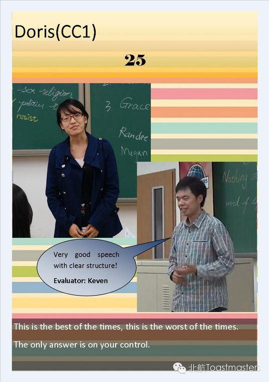
✓ ✓
✓ ✓
✓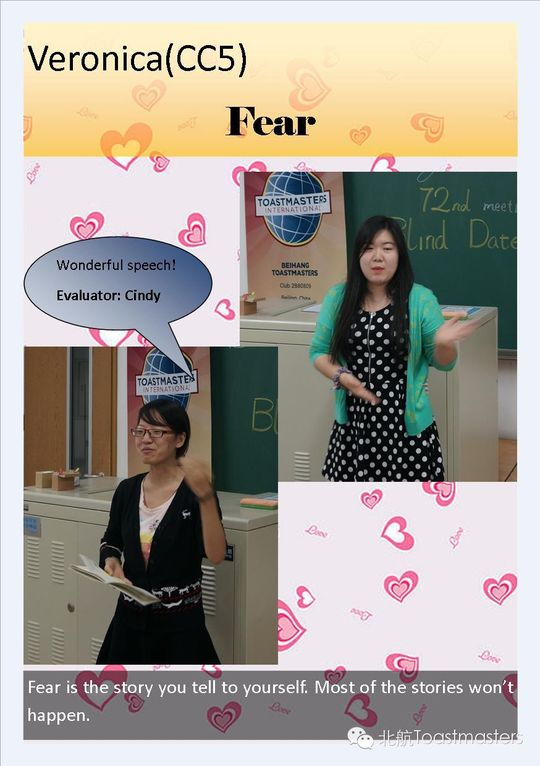
✓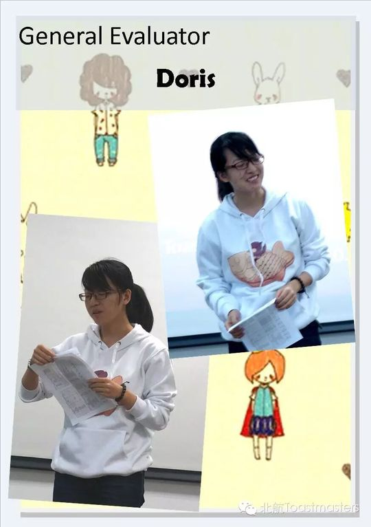
✓ ✓
✓ ✓
✓ ✓
✓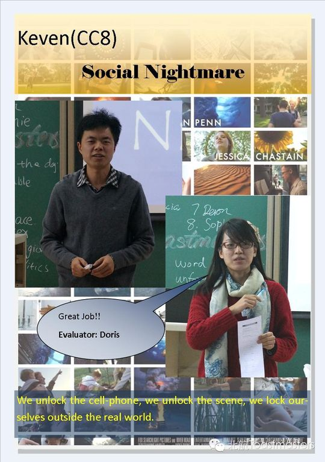
✓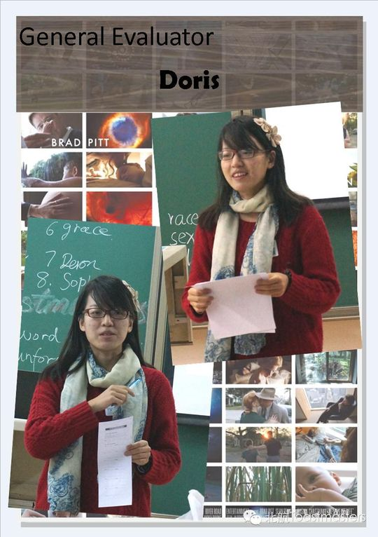
✓ ✓
✓ ✓
✓ ✓
✓ ✓
✓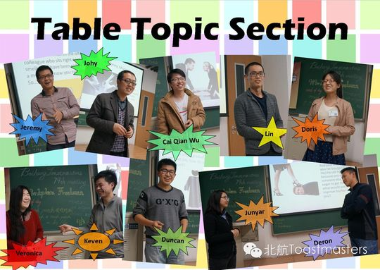
✓ ✓
✓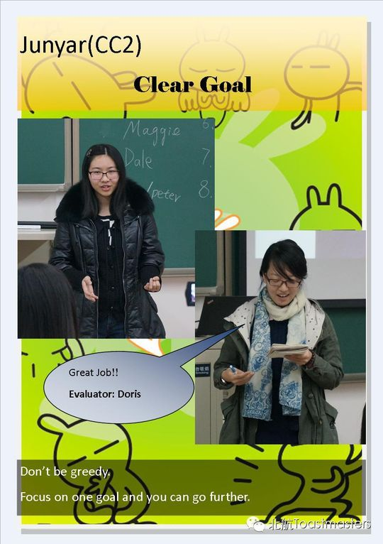
✓ ✓
✓ ✓
✓ ✓
✓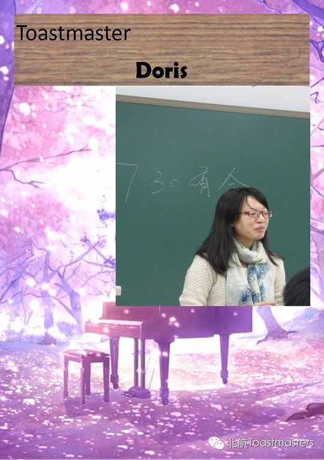
✓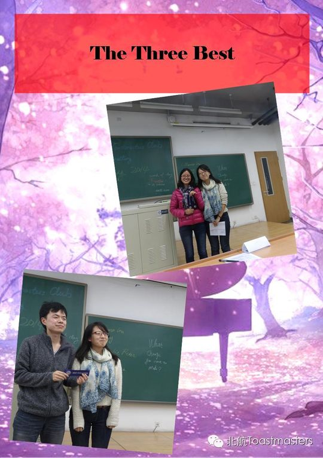
✓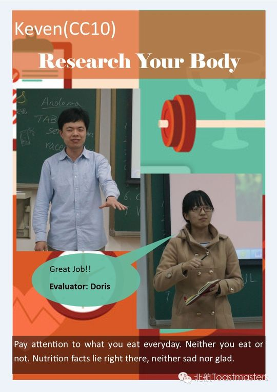
✓ ✓
✓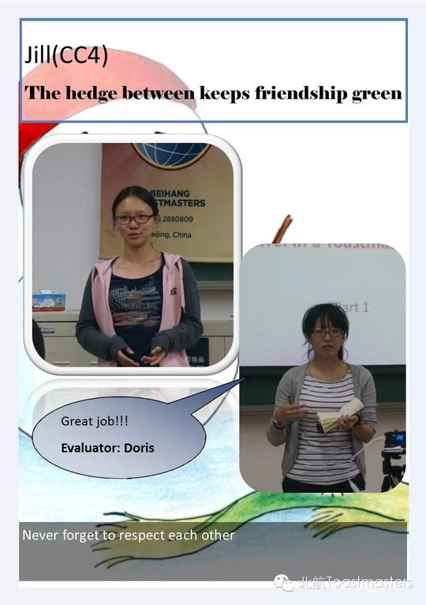
✓ ✓
✓ ✓
✓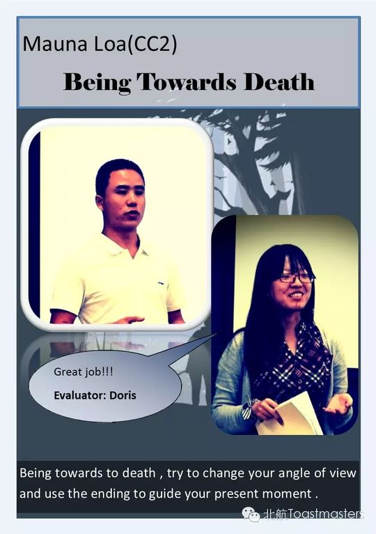
✓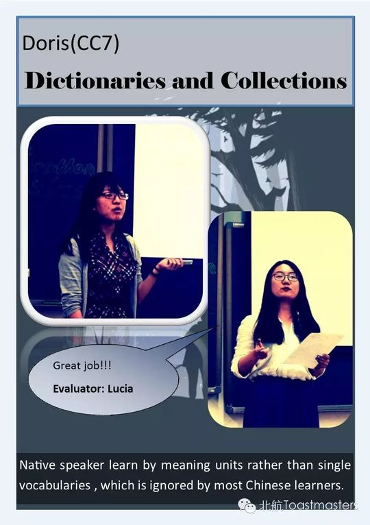
✓ ✓
✓